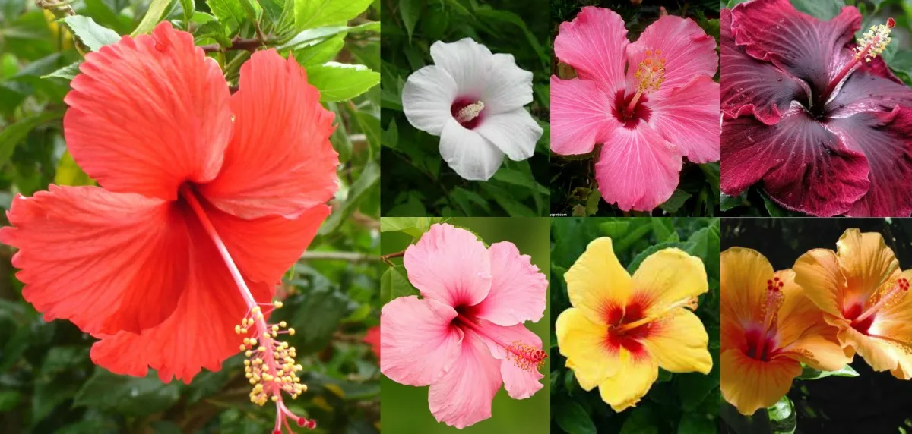

L'hibiscus est une plante tropicale aux grandes fleurs colorées. Elle est souvent cultivée pour sa beauté , elles peuvent etre rouges, roses, jaunes ou blanches. Certaines variétés sont aussi utilisées pour faire des infusions.
 Voir plus d'informations